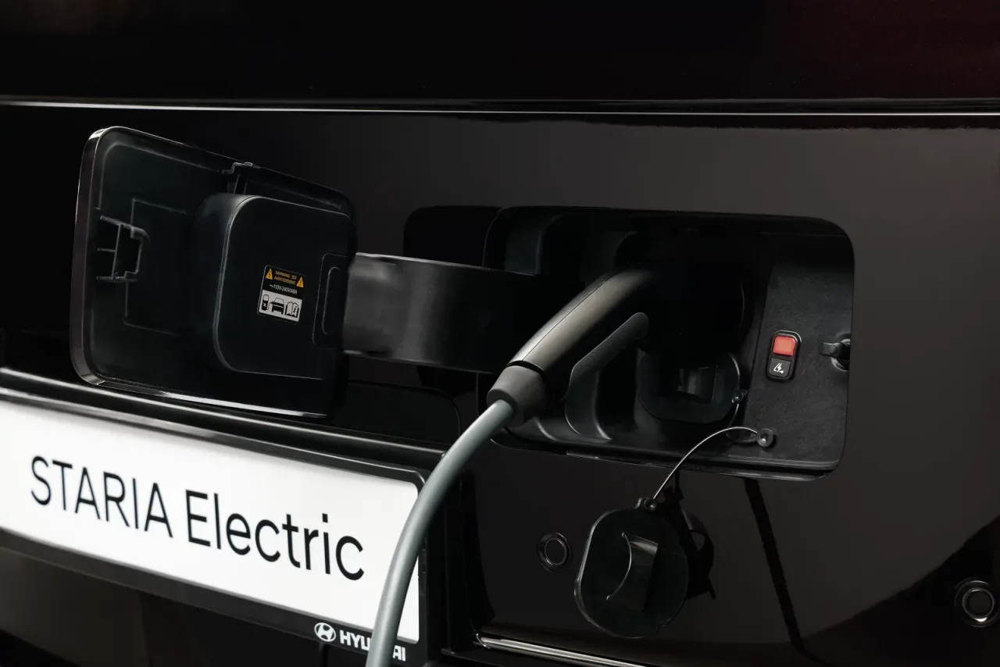

▲ 고속도로 휴게소 29곳에 충전기 131기가 들어간다. 장거리 주행의 병목이 풀릴지가 관건이다
전기차로 장거리를 뛰어본 사람은 압니다. 문제는 주행거리가 아니라 휴게소에서 앞에 몇 대가 서 있느냐입니다.
채비가 고속도로 휴게소 29곳에 충전기 131기를 구축합니다. 한국도로공사와 협상 절차를 진행 중입니다.
그런데 이 발표에서 실제로 눈여겨볼 숫자는 131이 아닙니다. 82입니다.
1. NACS 82기가 의미하는 것
NACS(North American Charging Standard)는 테슬라가 개발한 충전 규격입니다. 이후 북미 표준으로 채택되면서 완성차 업체들이 줄줄이 채택을 선언했습니다.
국내 상황은 이렇습니다. 지금까지 국내 급속충전기는 대부분 DC 콤보(CCS1)입니다. 테슬라 차량은 어댑터를 쓰거나 테슬라 전용 슈퍼차저를 찾아가야 했습니다.
이번 사업에 NACS 커넥터 82기가 들어갑니다. 기존 사업과 합치면 총 167기가 됩니다.
왜 중요한가. 국내 전기차 시장에서 테슬라의 비중은 작지 않습니다. 그리고 NACS를 채택하기로 한 브랜드의 신차가 순차적으로 들어오고 있습니다. 공용 충전 인프라가 두 규격을 함께 지원하지 않으면, 휴게소 충전기 앞에서 규격 때문에 대기하는 상황이 벌어집니다.
채비 최영훈 대표는 "고속도로 휴게소 충전 인프라를 확대해 장거리 이동 때 충전 편의성을 높이고, NACS 커넥터 확대를 통해 충전 규격 다변화에도 대응하겠다"고 밝혔습니다.

▲ 국내 급속충전기는 대부분 DC 콤보 규격이다. NACS 커넥터가 늘면 규격에 따른 대기가 줄어든다
2. 200kW와 250A — 숫자를 읽는 법
구성은 200kW급 118기와 멀티 충전기 13기입니다. 최대 250A의 충전 전류를 지원합니다.
여기서 kW와 A를 구분해야 합니다.
- kW(출력) — 충전기가 낼 수 있는 최대 전력. 전압 × 전류로 결정된다.
- A(전류) — 실제로 흐르는 전기의 양. 케이블 굵기와 냉각 방식이 한계를 정한다.
왜 이 구분이 중요한가. 400V 차량과 800V 차량이 같은 충전기에서 다른 속도를 내기 때문입니다.
| 차량 시스템 전압 | 250A × 전압 | 결과 |
|---|---|---|
| 400V급 | 약 100kW | 충전기 출력을 다 못 쓴다 |
| 800V급 | 약 200kW | 충전기 성능을 온전히 쓴다 |
즉 200kW 충전기에 꽂았다고 모든 차가 200kW로 충전되는 것이 아닙니다. 800V 아키텍처를 쓰는 차가 이 인프라의 수혜를 가장 크게 받습니다.
멀티 충전기 13기는 한 대의 충전기가 여러 대의 차량에 전력을 나눠 공급하는 방식입니다. 동시에 여러 대가 꽂히면 대당 출력은 나뉩니다. 대기 줄을 줄이는 데는 유리하지만, 개별 충전 속도는 상황에 따라 떨어집니다.

▲ 멀티 충전기는 여러 대에 전력을 나눈다. 대기는 줄지만 개별 속도는 상황에 따라 떨어진다
3. 휴게소가 병목인 이유
충전기 수가 부족하다는 말은 절반만 맞습니다. 실제 병목은 위치와 회전율에서 생깁니다.
- 수요가 시간대에 몰린다 — 명절과 휴가철 특정 시간대에 집중된다. 평시 이용률로 설비를 짜면 성수기에 무너진다.
- 회전율이 낮다 — 80% 이후 충전 속도가 급격히 떨어지는데 100%까지 채우고 가는 이용자가 있으면 뒤가 밀린다.
- 점유 방치 — 충전이 끝난 뒤에도 차를 빼지 않는 경우다.
- 고장 방치 — 설치 수가 늘어도 가동률이 낮으면 의미가 없다.
두 번째 항목은 이용자가 직접 줄일 수 있습니다. 리튬이온 배터리는 80%를 넘으면 셀 보호를 위해 전류를 급격히 줄입니다. 80%에서 100%까지 채우는 시간이 10%에서 80%까지 채우는 시간과 비슷하게 걸리는 경우도 있습니다.
장거리 주행에서는 80%에서 끊고 다음 휴게소에서 다시 채우는 편이 총 소요 시간이 짧습니다. 뒷사람의 대기도 함께 줄어듭니다.
4. 장거리 주행 전에 짜두면 좋은 것
인프라가 늘어도 계획 없이 출발하면 결과는 같습니다. 출발 전에 정리해둘 것은 이렇습니다.
- ① 충전 지점을 2곳씩 묶어 정한다 — 1순위 휴게소가 만차이거나 고장이면 바로 다음 지점으로 넘어갈 수 있어야 한다.
- ② 도착 시 배터리를 10~20% 남기는 구간으로 짠다 — 여유가 너무 없으면 대안 선택지가 사라진다.
- ③ 충전 앱에서 실시간 사용 여부를 확인한다 — 설치 대수보다 지금 비어 있는지가 중요하다.
- ④ 도착 전 배터리 예열(프리컨디셔닝)을 켠다 — 겨울철에는 배터리 온도가 낮으면 급속 충전 속도가 크게 떨어진다.
- ⑤ 회원카드와 결제 수단을 미리 등록해둔다 — 사업자마다 결제 방식이 다르다.
네 번째 항목이 의외로 큰 차이를 만듭니다. 리튬이온 배터리는 온도가 낮으면 내부 저항이 커져 같은 충전기에서도 전류를 적게 받습니다. 최근 차량은 내비게이션에 충전소를 목적지로 넣으면 자동으로 배터리를 데워주는 기능을 갖추고 있습니다.
다섯 번째도 실무에서 자주 막히는 지점입니다. 휴게소 충전기는 사업자가 제각각이라, 처음 이용하는 사업자의 충전기 앞에서 앱 설치부터 시작하게 되는 경우가 있습니다.

▲ 설치 대수보다 중요한 것은 지금 비어 있는지다. 충전 지점은 2곳씩 묶어 계획하는 편이 안전하다
5. 정리
채비가 고속도로 휴게소 29곳에 충전기 131기를 구축합니다. 200kW급 118기와 멀티 충전기 13기로 구성되며 최대 250A를 지원합니다.
핵심은 NACS 커넥터 82기가 포함된다는 점입니다. 기존 사업과 합산하면 총 167기가 됩니다. 규격 차이로 인한 대기를 줄이는 방향입니다.
다만 250A 기준으로 400V 차량은 약 100kW, 800V 차량은 약 200kW로 실제 속도가 갈립니다. 장거리 주행에서는 80%에서 끊고 이동하는 편이 총 소요 시간과 대기 모두에 유리합니다.